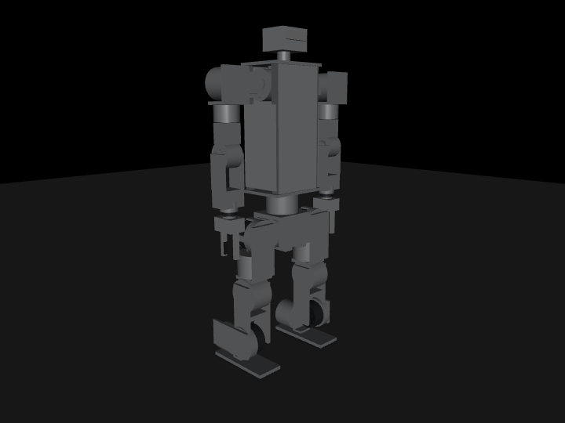
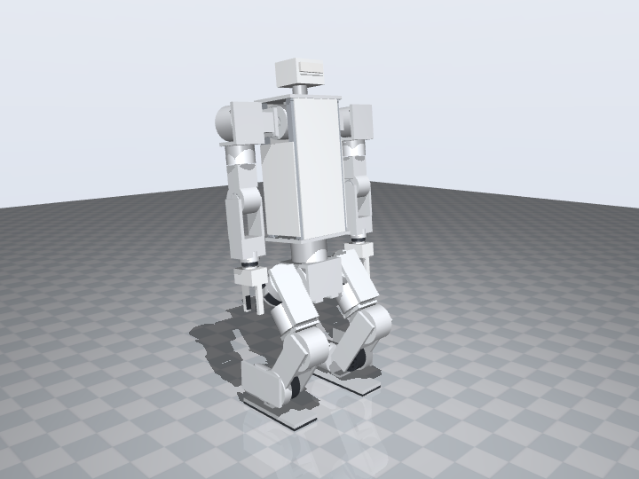
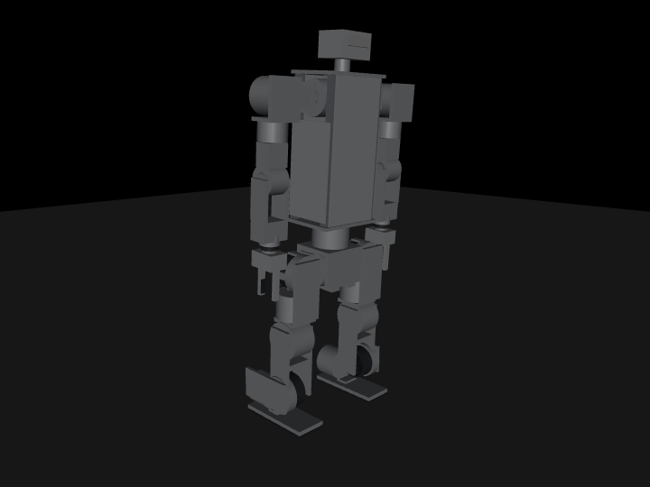

Software
The robot description already exists: the same script that draws the 3D model writes a URDF with masses and inertias. Training, simulation and the on-robot loop follow the two parent projects' published code, both of which are permissively licensed.
Robot description
foh_v0_2.urdf is generated by tools/build_data.py from the same part list as the viewer: 24 links, 23 revolute joints, every part as a box or cylinder for both visual and collision, link masses from the catalogue and inertias from the primitives. Frame: X forward, Y left, Z up; the pelvis is the base link. Joint limits are the software limits on the design page; effort limits are the actuators' peak torques. A <mujoco> block in the file tells MuJoCo to keep the coloured visual geoms, so it loads with its materials; other parsers ignore the block.
# MuJoCo reads URDF directly
pip install mujoco
python -c "import mujoco, mujoco.viewer as v; m = mujoco.MjModel.from_xml_path('foh_v0_2.urdf'); v.launch(m)"
# or any URDF viewer
pip install yourdfpy && yourdfpy foh_v0_2.urdf| What the URDF has | What it does not have yet |
|---|---|
| Kinematics, joint axes and limits, link masses and inertias, primitive collision shapes, actuator effort limits, a floating pelvis base | Detailed meshes, contact-tuned foot geometry, joint friction and damping from measurement, actuator armature and reflected inertia, the gripper's prismatic joints |
Regenerate after any change to the model with python3 tools/build_data.py; the viewer, the BOM tables and the URDF update together.
Does it stand? A physics check
Before any policy exists, the URDF can be dropped into MuJoCo with a floor, a floating base and one position servo per joint, each limited to its actuator's peak torque. tools/sim_stand.py does exactly that and runs the tests below. They answer what a design should answer before it is printed: the mass sits over the feet, the leg torques while standing and crouching stay far inside the limits, and a joint-stiff robot with no balance controller survives a moderate push. These are not the numbers a trained policy will get; they are the floor it starts from.



| Test | What happens | Max tilt | Settled tilt | Busiest joint | Result |
|---|
Reading it. Standing costs the legs under 1 N·m per joint, because the centre of mass lands 10 mm behind the ankle axis and the feet extend 93 mm in front of it and 142 mm behind. The crouch peaks at 16 N·m at the knee, a quarter of the RS03's 60 N·m, with the robot settling 72 mm lower. The pushes are impulses on the torso: the robot rides out 8 N·s (40 N for 0.2 s) on stiff joints alone and topples at 10 N·s. That threshold is the geometry, not the actuators: 10 N·s gives the 27 kg robot 0.37 m/s, whose capture point at a 0.53 m centre-of-mass height is 85 mm forward, right at the toe. A controller that shifts the hips or takes a step moves that limit far out; the bring-up test A8 asks for a 20 N push under the standing policy for that reason.
# reproduce (MuJoCo 3.x, numpy, pillow for the frames)
pip install mujoco numpy pillow
python3 tools/sim_stand.py --render # prints the table, writes assets/data/sim_results.json and assets/img/sim/*.png
# watch it interactively
python3 -c "import mujoco, mujoco.viewer as v, sys; sys.path.insert(0, 'tools'); import sim_stand; v.launch(sim_stand.build())"The servo gains in the script (RS03 220 N·m/rad, RS06 150, RS02 80, RS05 25, with damping at 4 % of that) are simulation gains for a stiff hold; the real MIT-mode gains in the control contract are lower and get tuned once the actuators are on the bench.
And walking?
Nothing in the primitive model says whether the robot walks; that needs a controller, and the standard route today is a reinforcement-learning policy. The check for this design is the same path the two parent projects took, in this order:
- Static margins (done above): mass over the feet, crouch within torque limits, push recovery on stiff joints.
- Torque and speed margins for a gait: the design page compares the RS03's 60 N·m and the RS06's 36 N·m against Duke V2's measured walking loads on the same joints; the knee and hip carry more than a 2× margin at 27 kg.
- Train a velocity-tracking policy in Isaac Lab (Berkeley Humanoid Lite's task and rsl_rl config, with this URDF converted to USD) or in MuJoCo Playground with the MJCF that
sim_stand.build()compiles. A policy that tracks 0.5 m/s in simulation with masses and friction randomised is the pass mark. - Sim-to-sim: run the same policy in plain MuJoCo with the actuator torque limits and a 2 ms loop, as
play_mujoco.pydoes for Berkeley Humanoid Lite. If it walks there too, the robot's model is not the weak link. - The real robot: acceptance tests A7 to A9, posture then standing then a first step, on the hoist.
The v0.5 milestone on the roadmap is the first of these on hardware; steps 3 and 4 need no hardware and are the next software work.
Stack
| Layer | Choice | Start from |
|---|---|---|
| Training | Isaac Lab, PPO via rsl_rl, a velocity-tracking locomotion task with domain randomisation on masses, friction and actuator gains | Berkeley Humanoid Lite: same repo layout (source/<robot>, source/<robot>_assets, scripts/rsl_rl), MIT |
| Sim-to-sim | MuJoCo, same observation and action contract as the real robot | Berkeley Humanoid Lite's scripts/sim2sim/play_mujoco.py |
| On-robot loop | Python on the mini PC: 500 Hz PD in the actuators (MIT mode), 50 Hz policy with ONNX Runtime, SocketCAN via python-can | Duke Humanoid V2 deploy (Apache-2.0) for the RobStride protocol, ID/limit/zero scripts and the safety layers; Berkeley Humanoid Lite lowlevel for the policy runner |
| Teleop and grippers | Gamepad velocity commands; Feetech serial servo SDK for the grippers | Duke V2 hardware_bindings/ft_servo (MIT) |
| Perception (optional) | librealsense2 → the policy's height-map or a separate planner | Duke V2's head-camera pipeline |
Control contract
Fixed by the URDF and this page, so that a policy trained by one person runs on a robot built by another.
| # | Joint | Actuator | Default (rad) | Kp | Kd |
|---|
- Joint order is the table above, which is the URDF's joint order.
- Observation (proposed, 75 values, as Berkeley Humanoid Lite): base angular velocity (3), projected gravity (3), velocity command (3), joint positions relative to default (23), joint velocities (23), last action (23) → 78 with the waist; the exact vector is fixed when the task is written.
- Action: 23 position targets, scaled by 0.25 rad around the default pose, sent to the actuators in MIT mode with the Kp and Kd above.
- Rates: policy 50 Hz, actuator command 500 Hz, IMU 200 Hz.
- Gains are starting points from Duke V2's static-stand values scaled by actuator size; tune them in simulation before the real robot.
- Sign convention: positive command = positive URDF rotation, verified per joint at bring-up (test A4).
- Stops: Ctrl-C zeroes commands; a 200 ms command-stream watchdog zeroes them; the gamepad stop pre-empts everything; the E-stop cuts the motor bus.
Repositories
| Repository | Contents | State |
|---|---|---|
| fullyopenhml.github.io | This site, tools/build_data.py, the generated JSON and URDF | live |
| foh_assets | URDF, MJCF, USD, meshes once they exist | planned |
| foh_lowlevel | RobStride driver, bring-up scripts, policy runner | planned |
| foh_rl | Isaac Lab task, configs, checkpoints | planned |